10 部片单 · 恐怖 / 科幻 / 惊悚 / 悬疑 / 剧情
| # | 片名 | 类型 | 评分 / 状态 |
|---|---|---|---|
| 01 | 午夜凶铃 | 恐怖 / 悬疑 / 心理惊悚 | 7.6 / 95% / 7.2 |
| 02 | 咒怨 | 恐怖 / 超自然 / 惊悚 | 7.6 / 64% / 7.0 |
| 03 | 电锯惊魂 | 恐怖 / 惊悚 / 悬疑 | 8.0 / 50% / 7.6 |
| 04 | 落水狗 | 犯罪 / 惊悚 / 剧情 | 8.4 / 92% / 8.3 |
| 05 | 潘神的迷宫 | 悬疑 / 惊悚 / 奇幻 / 剧情 | 7.9 / 95% / 8.2 |
| 06 | 红辣椒 | 科幻 / 悬疑 / 心理惊悚 / 动画 | 8.9 / 85% / 7.7 |
| 07 | 变蝇人 | 科幻 / 恐怖 / 身体恐怖 | 7.5 / 92% / 7.6 |
| 08 | 妙想天开 | 科幻 / 惊悚 / 黑色幽默 / 剧情 | 8.2 / 98% / 8.0 |
| 09 | 第五元素 | 科幻 / 动作 / 冒险 | 8.1 / 71% / 7.6 |
| 10 | 告白 | 剧情 / 惊悚 / 犯罪 | 8.1 / 81% / 7.7 |
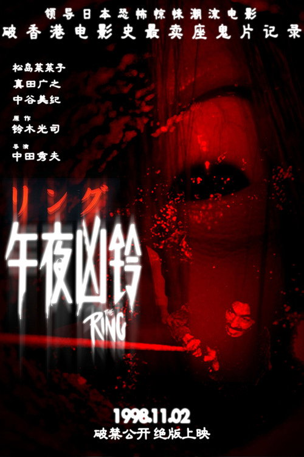
午夜凶铃 Ring
一盘看完七天后会死的录像带。记者想搞清楚，它到底是怎么杀人的。
剧情梗概
神秘录像带传闻：看过的人七天后离奇死亡。女记者浅川在侄女葬礼后发现，侄女和朋友们都看过同一盘带子。她拷贝了一份自己看，并找来前夫高山一起追查——录像带里的井、海边的老屋、一段被抹去的记忆。线索指向一个叫贞子的女孩和一座叫「伊熊」的废墟。时间只剩六天。
亮点
- 中田秀夫执导，改编自铃木光司 1991 年的同名畅销小说；它是「日式恐怖（J-Horror）」走向世界的第一块基石，直接催生了《咒怨》与好莱坞的《午夜凶铃》(2002)。
- 贞子从电视里爬出来的那个镜头，被评为影史最经典的恐怖画面之一；它把「媒介本身」变成恐怖源——看的东西会反噬看的人。
- 摄影与声音刻意追求「潮湿、发青、安静」的质感，几乎不用 jump scare，压迫感来自留白与日常物的错位（电话、井、头发）。
- 女主角松岛菜菜子是当年日本国民级女演员，她把「职业女性的冷静」与「母亲的保护欲」叠在一起，让追查动机成立。
- 真田广之饰前夫高山，是本片与续集里真正推进解谜的人；他在《贞子缠身》里也继续出演。
- 全球带动一股「录像带 / 诅咒」恐怖热潮；小说原作者铃木光司此后写了多部续作，世界观持续扩张。
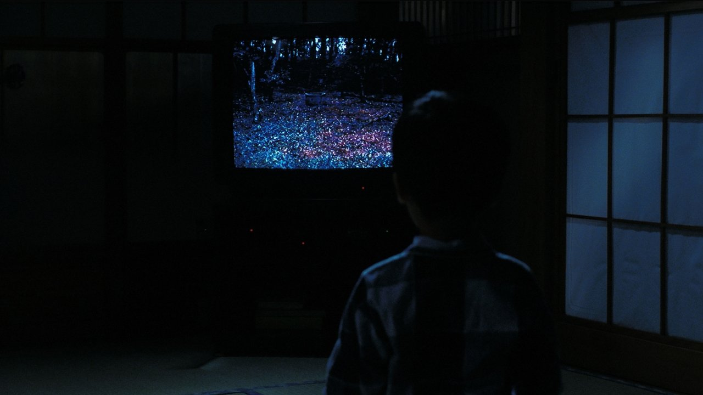
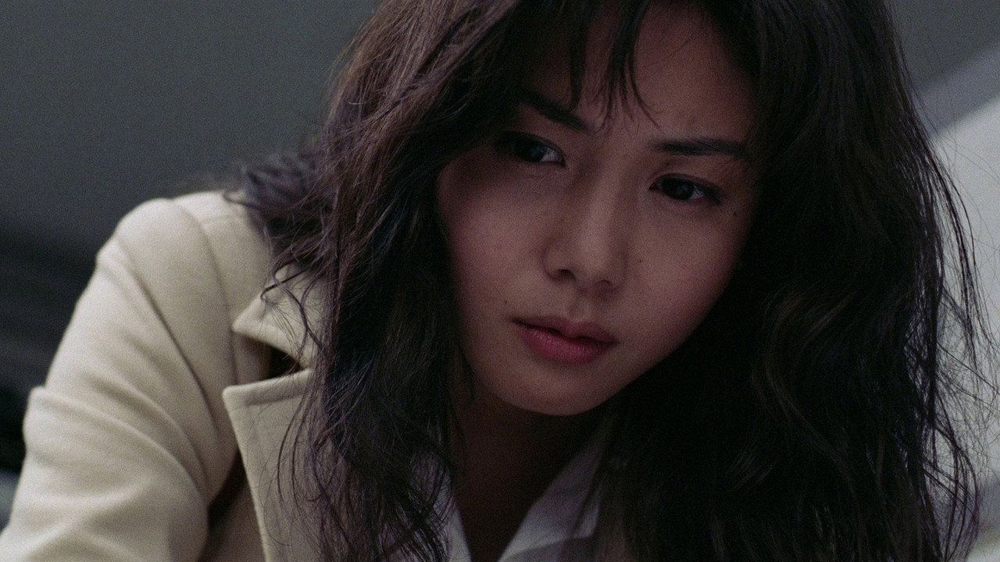
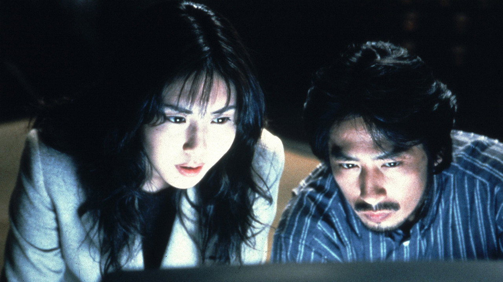
导演与主创 · 他们的历史作品
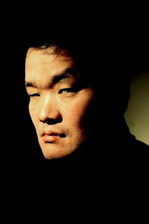
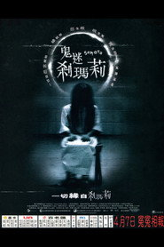
午夜凶铃2(美版)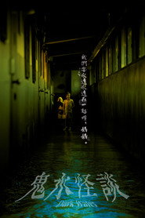
鬼水怪谈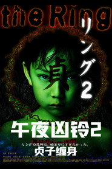
午夜凶铃2：贞子缠身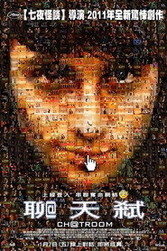
聊天室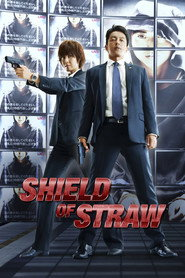
稻草之盾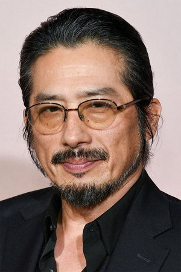
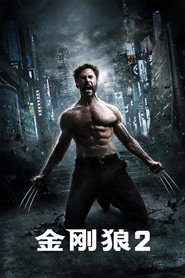
金刚狼2 四十七浪人
四十七浪人 异星觉醒
异星觉醒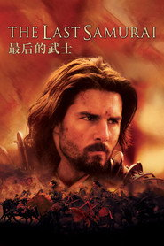
最后的武士短评（轻微剧透）
《午夜凶铃》的恐怖不是吓你一跳，是让你之后每次看到电视机黑屏都会愣一下。中田秀夫真正的厉害之处在于他几乎不靠怪物：贞子露脸的时间加起来不到一分钟，但整部片的气口都被「那个画面迟早会来」填满。它拍的是「信息如何像病毒一样传播」——一盘带子、一个口耳相传的传闻、一个你明知危险却忍不住要看的动作。放到今天看，这简直是社交媒体时代的预言。技术上它很克制，大量手持、低照度、环境音，反而比后来那些血浆片更耐看。缺点得说清楚：节奏对现代观众偏慢，前三十分钟几乎在铺设定；作为悬疑片它的解谜逻辑经不起硬抠（「生放」那段设定很玄）；豆瓣 7.6 低于它在恐怖史上的地位。轻微剧透：浅川以为自己破了诅咒，但最后那个电话——影片用最日常的铃声把恐惧重新按回了你的生活里。
为什么值得一看
喜欢《咒怨》《鬼影》那种「日常物异化」的日式恐怖观众；想看「恐怖片如何变成文化现象」的人。它几乎不血腥，靠氛围与概念吓人（日本 15 禁，建议成年观看）。不适合想看高速惊吓的人。内地未引进，流媒体可看。
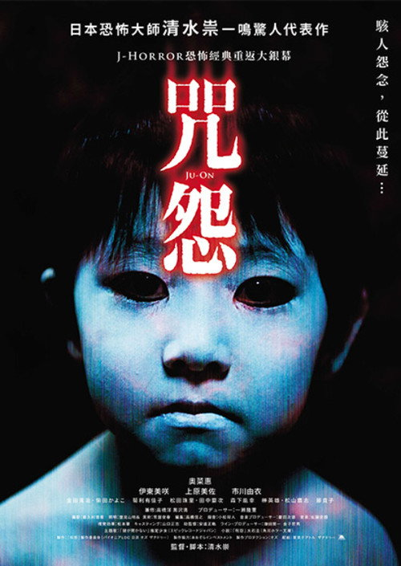
咒怨 Ju-On: The Grudge
一所房子被诅咒了。任何人走进去，都会被它记住。
剧情梗概
佐伯刚雄杀害妻儿后，那栋房子里的怨气没有消散，反而固化成一种「咒怨」——任何踏入的人都会被缠上，然后以最安静的方式消失。影片用碎片化的章节展开：女教师理佳去学生家里家访、照顾老人的志愿者、搬进来的年轻夫妇、调查此事的警察，每一组人都是独立又彼此勾连的受害者。诅咒不讲道理，也不挑人。
亮点
- 清水崇自编自导，本片脱胎于他 1998–2000 年的录像带电影《咒怨》系列；这是它第一次以剧场版长片形态出现。
- 「伽椰子从楼梯上倒着爬下来」「少年俊雄在角落里蹲着」两个意象成为一代人的童年阴影，影响了全球无数恐怖片。
- 恐怖机制很特别：它不是「鬼追你」，是「鬼一直在那里，你只是慢慢发现」。诅咒像传染病，靠空间而非剧情传递。
- 碎片化、无主角的叙事结构在当时很新；后来好莱坞翻拍版（2004，莎拉·米歇尔·盖拉主演）也沿用了章回式。
- 藤贵子饰演的伽椰子几乎不说话，全靠肢体与妆造制造不安；奥菜惠饰家访的女教师理佳，是全片戏份最重的「活人视角」。
- 低成本、快节奏（92 分钟）、一个场景拍到底的拍法，让它在全球邪典恐怖圈长盛不衰，并直接催生多部续作与美版系列。
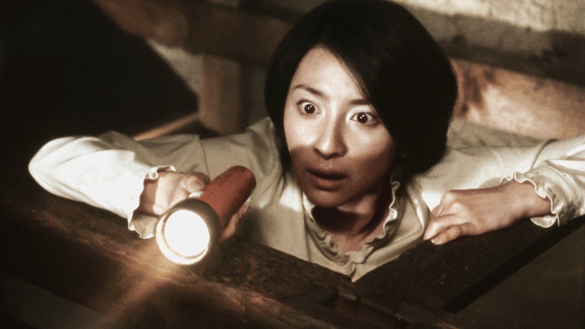
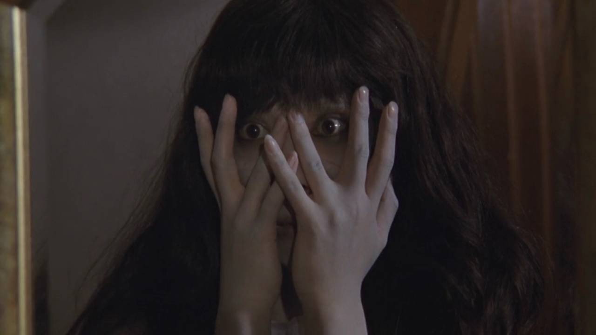
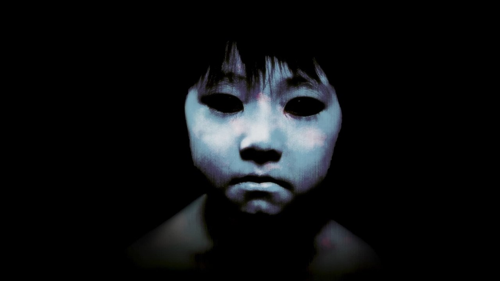
导演与主创 · 他们的历史作品
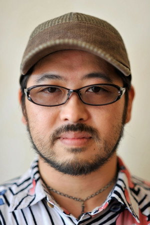
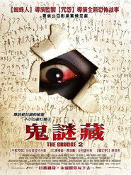
咒怨2 美版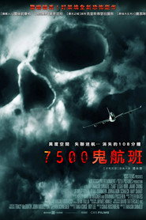
7500航班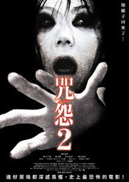
咒怨2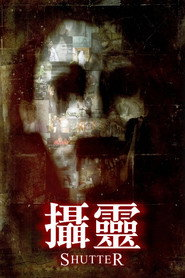
鬼影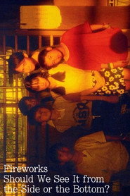
烟花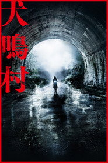
犬鸣村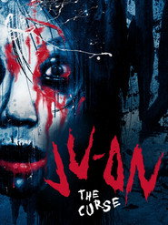
咒怨录像带版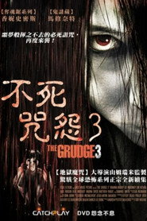
咒怨3 美版短评（轻微剧透）
《咒怨》的恐怖是一种「没有出口」的恐怖。别的鬼片好歹给你一个规则——比如七天后死、比如不能回头——清水崇连规则都不给。诅咒就在那栋房子里，你进去就沾上，出去也甩不掉，片尾字幕一出来你才发现所有人都没逃掉。这种「结构性无力感」比任何 jump scare 都难熬。它最聪明的一笔是让伽椰子「倒爬楼梯」：动作违反物理，却没有音乐烘托、没有突然放大，就那么安静地发生了，反而更瘆人。缺点也要讲：碎片化叙事对第一次看的观众门槛不低，人物关系容易理不清；烂番茄只有 64%，影评人对它「重复有余、收束不足」有意见；豆瓣 7.6 基本是靠情怀与童年阴影撑着。轻微剧透：理佳最后在自家天花板上看见那张脸——影片暗示诅咒已经跟着她回了家，而它从没说过会停。
为什么值得一看
喜欢《午夜凶铃》《鬼水怪谈》《犬鸣村》等日式怨灵恐怖的观众；能接受慢热、碎片化、靠氛围而非剧情节奏的人。含少量惊吓画面与身体恐怖（15 禁，建议成年观看）。内地未引进，流媒体可看。
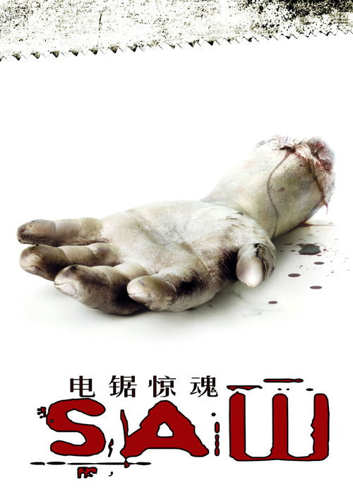
电锯惊魂 Saw
两个陌生人醒来，被锁在废弃厕所。中间躺着一具尸体，手里握着一把枪。
剧情梗概
摄影师大卫和律师亚当在一间废弃浴室醒来，脚踝被铁链锁住，中间地上是一具已经死去的人的身体，手里握着一把左轮。录音里一个叫「竖锯」（Jigsaw）的人说：想活，就得玩我的游戏。随着两人回忆与门外的线索拼合，他们发现彼此的命被精心安排过——而那个传说中从不亲自动手、只逼人「自救」的杀手，其实就在附近看着。
亮点
- 温子仁（James Wan）长片处女作，编剧是雷·沃纳尔（也是主演之一）；两人在墨尔本读书时期就写了这个剧本，成本仅约 120 万美元。
- 开创了「陷阱自救」亚类型，竖锯（Jigsaw）成为 21 世纪最具辨识度的恐怖反派之一，系列拍到第十部仍在全球收割票房。
- 全片几乎只有一个主场景（那间厕所），靠非线性剪辑把「现在」与「过去」拧在一起，最后十分钟的反转奠定了整个系列的基调。
- 配乐与音效极其克制又刺耳，那首变调的「Hello Zepp」成为系列听觉符号。
- 加利·艾尔维斯饰侦探，雷·沃纳尔饰亚当，温子仁用极低成本把悬念撑到了极致。
- 尽管影评人评价两极（烂番茄仅 50%），它仍是低成本恐怖商业化的范本：全球票房约 1.03 亿美元。
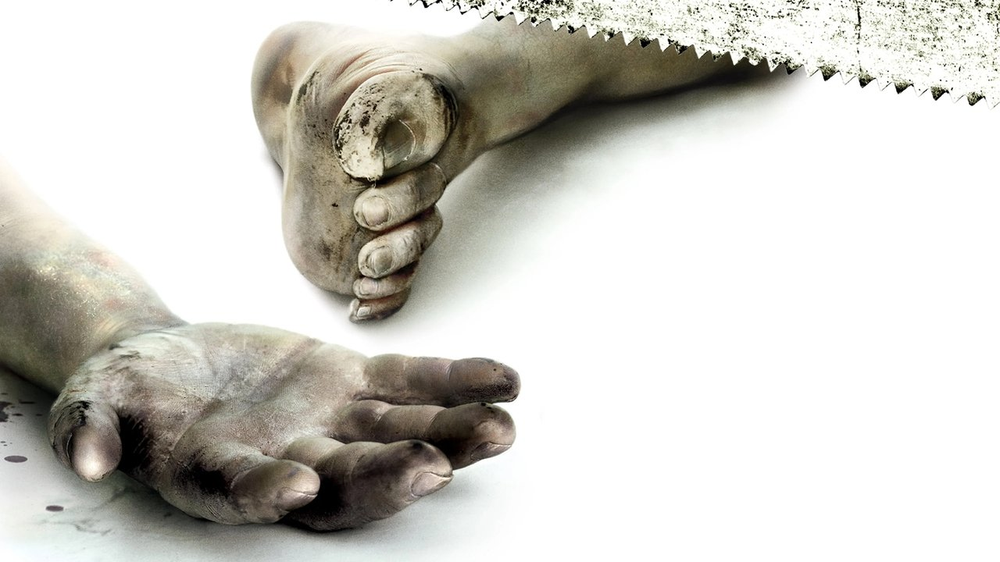
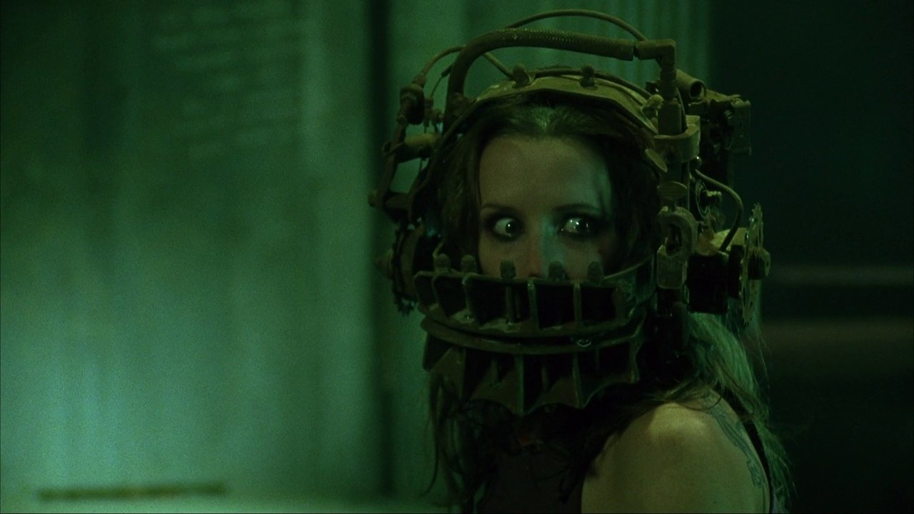
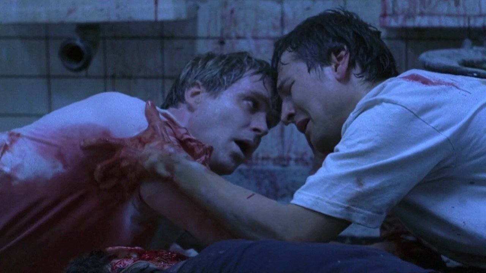
导演与主创 · 他们的历史作品
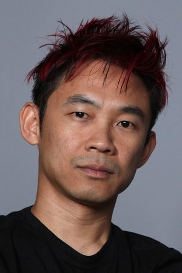
 海王
海王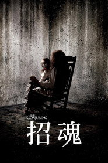
招魂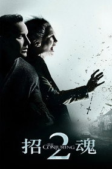
招魂2
 潜伏
潜伏 隐形人
隐形人 电锯惊魂2
电锯惊魂2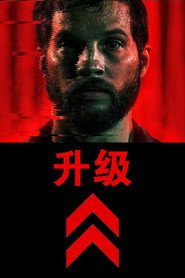
升级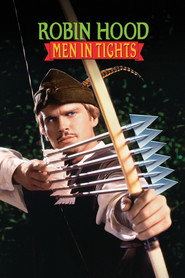
罗宾汉也疯狂短评（轻微剧透）
《电锯惊魂》最被低估的是它其实没那么「血」。比起后来那些越拍越夸张的续集，第一部把大部分力气花在「两个被锁住的人怎么想出去」上——它更接近一部密室惊悚，而非虐杀片。竖锯这个角色的设计才是精髓：他不杀你，他只是给你一个比死更难受的选择，然后让你自己选。这让它有了一种扭曲的道德戏味，区别于纯血浆片。缺点是真的明显：画面刻意做旧、颗粒感重（这是风格也是遮丑），逻辑在重看时站不住（很多机关经不起推敲），而烂番茄 50% 说明影评人当年普遍嫌它粗粝。但它在恐怖迷心里地位很高，豆瓣 8.0 和 IMDb 7.6 都高于专业评分。轻微剧透：结尾那个「死人」突然坐起来的镜头——它不只是吓人，是把整部片的时间线一次性推翻重排，这也是为什么续集能接着往下编。
为什么值得一看
喜欢《万能钥匙》《致命ID》那种密室 / 陷阱惊悚的观众；能接受较高强度血腥与身体折磨的成年观众（R 级，慎入）。不适合晕血或想看轻松恐怖的人。内地未引进，流媒体可看。
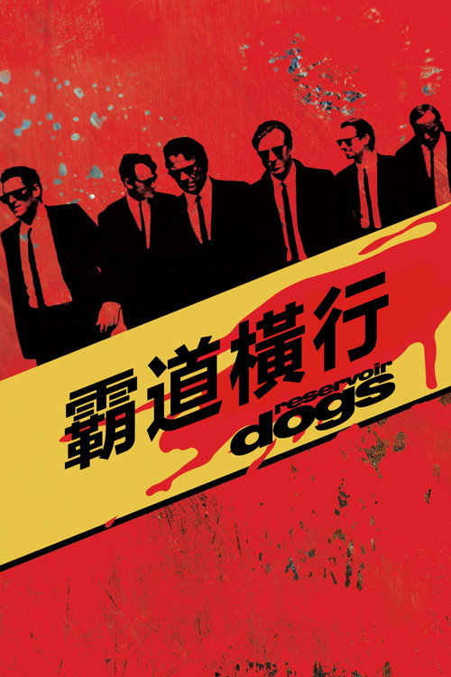
落水狗 Reservoir Dogs
八个用颜色代号的劫匪，出场就有人中枪、有人内鬼。倒叙从这里开始。
剧情梗概
一群互不相识的劫匪，被一个叫乔的老江湖用「白先生、橙先生、金先生」这样的颜色代号组织起来，去抢一家珠宝店。行动彻底失败——警察早有埋伏，几个人带着伤逃回藏身处。谁是内鬼？白先生相信兄弟，金先生怀疑所有人，橙先生快死了却开不了口。影片用非线性叙事，把「抢劫前夜」「仓库对峙」「卧底如何混进来」几段慢慢拼齐。
亮点
- 昆汀·塔伦蒂诺的长片处女作，剧本几乎全靠对话驱动；那场开场餐厅里关于「麦当娜歌词暗示」和「该不该给小费」的长谈，定义了他的作者风格。
- 哈维·凯特尔、蒂姆·罗斯、迈克尔·马德森、史蒂夫·布西密、克里斯·潘等群像，没有一个角色是「主角」，却个个立得住。
- 著名的「断了耳朵滴血跳舞」段落（迈克尔·马德森饰金先生逼供），把暴力和流行金曲放在一起，是昆汀「暴力即风格」的第一次集中亮相。
- 全片几乎不拍抢劫本身——你只看到结果和余波，悬念全靠人物关系与信任崩塌撑起，这种「藏起关键事件」的剪法后来被反复模仿。
- 蒂姆·罗斯饰橙先生（卧底警察），哈维·凯特尔饰白先生（最讲道义的老兵），两人的对手戏是全片情绪核心。
- 成本仅约 120 万美元，却在圣丹斯与戛纳（影评人周）一鸣惊人，直接把昆汀送上好莱坞 A 类作者之位。
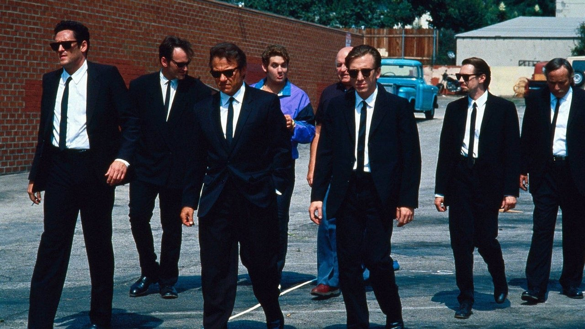
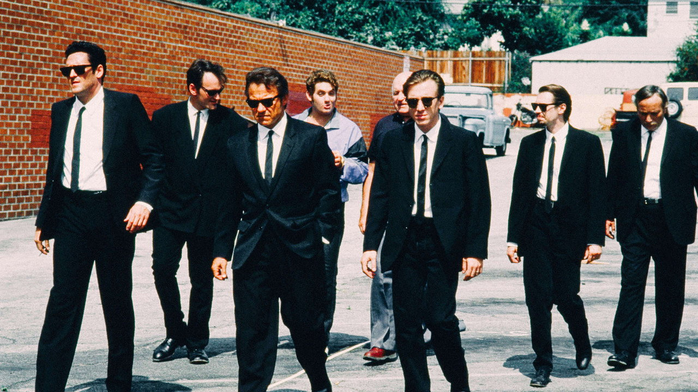
导演与主创 · 他们的历史作品
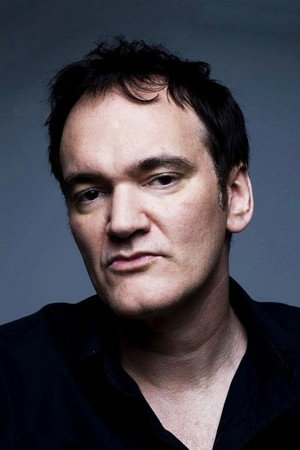
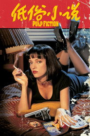
低俗小说 被解救的姜戈
被解救的姜戈 无耻混蛋
无耻混蛋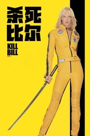
杀死比尔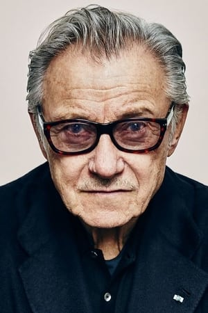
 杀出个黎明
杀出个黎明 布达佩斯大饭店
布达佩斯大饭店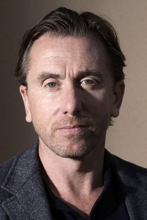
 无敌浩克
无敌浩克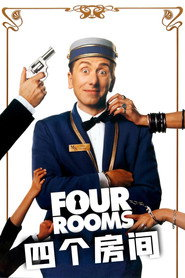
四个房间 八恶人
八恶人短评（轻微剧透）
《落水狗》最了不起的地方是它根本没让你看到「劫案」——你看到的是一群人怎么在失败后互相撕。昆汀的聪明在于他把类型片的「动作」全删了，只留下「人」：谁信谁、谁出卖谁、谁在硬撑。所以 99 分钟里大部分是说话，但每一句都往信任的裂缝里钉钉子。金先生那段暴力戏之所以经典，不是因为残忍，是因为它和一首甜腻老歌同时响起来——你被逼着同时感受「好听」和「难受」，这就是昆汀要的。缺点也要说：它对部分观众来说太「话痨」，开场那场餐厅戏足足聊了快十分钟；片中的某些暴力描写在今天会被更严格地审视；它不提供传统意义上的爽感或解谜。轻微剧透：橙先生在最后终于说出自己是警察——而他最信任的白先生，举枪的瞬间是全片最安静也最痛的一场戏。
为什么值得一看
喜欢《低俗小说》《看不见的客人》《非常嫌疑犯》那种「靠对话与结构撑场」的犯罪片观众；能接受非线性叙事与较高暴力描写的成年观众（R 级）。不适合想看动作爽片的人。内地未引进，流媒体可看。
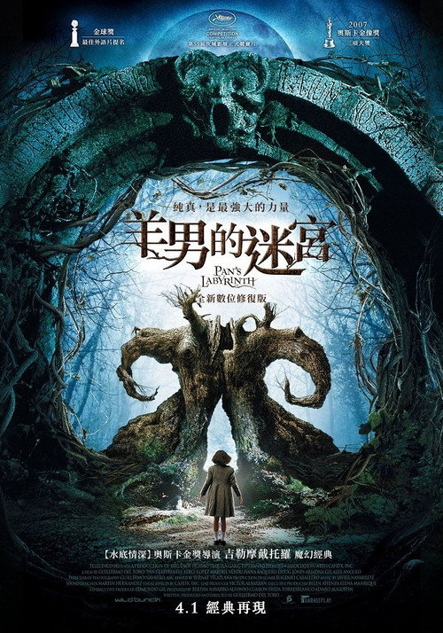
潘神的迷宫 Pan's Labyrinth
1944 年，西班牙内战尾声。继父在山林里清剿游击队，继女在地下遇见一个潘神。
剧情梗概
1944 年，西班牙内战即将结束，法西斯军官维德尔奉命在偏远山林清剿残存的游击队。他年轻的妻子卡门带着女儿奥菲丽亚随军迁居。奥菲丽亚在磨坊后遇见一只精灵，带她去见古老的潘神——潘神说她本是地下王国的公主，要完成三个任务才能回家。现实里，继父的暴虐与游击队的挣扎同时逼近；童话与战争，在她眼里是同一个世界的两面。
亮点
- 吉尔莫·德尔·托罗自编自导，是他「童话 + 暗黑」美学的集大成；本片与他后来的《水形物语》共享「边缘人 / 怪物即温柔」的内核。
- 伊万娜·巴克罗饰奥菲丽亚，当时年仅 11 岁，全片的现实与幻想都透过她的眼睛；塞尔希·洛佩斯饰继父维德尔，把一个「相信秩序、不懂爱」的军官演得既可怕又可悲。
- 三个任务的怪物设计是影史级：独眼去壳巨怪、食童妖（长着眼睛手掌的苍白怪物）都出自导演与特效团队的手作模型，而非纯 CGI。
- 拿下第 79 届奥斯卡最佳摄影、最佳艺术指导、最佳化妆三项大奖，并获最佳原创剧本与最佳外语片提名。
- 配乐由西班牙作曲家哈维尔·纳瓦雷特创作，那首手风琴主题的旋律成为全片情感锚点。
- Metacritic 98、烂番茄 95%，是 21 世纪西班牙语电影在国际影评圈评价最高的作品之一。
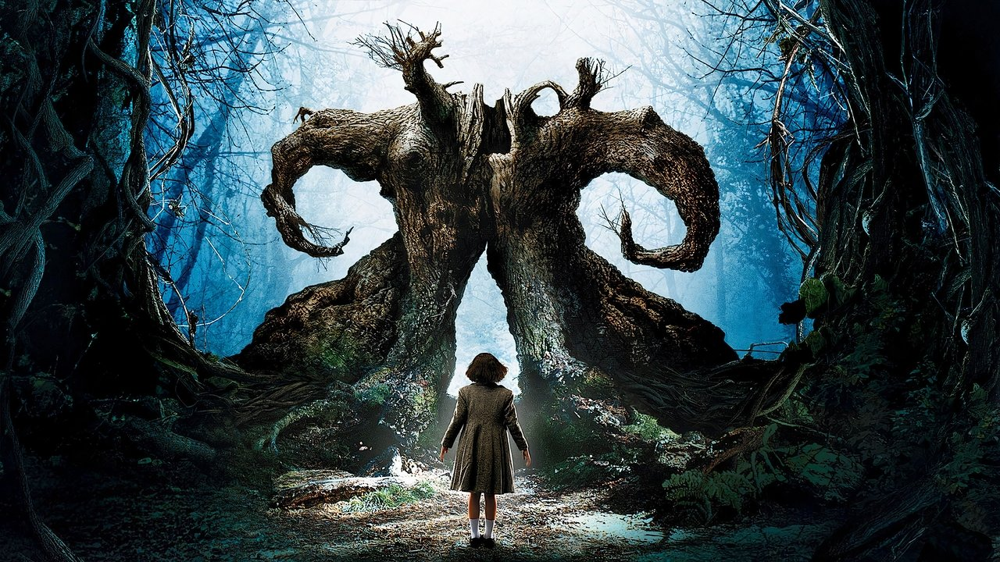
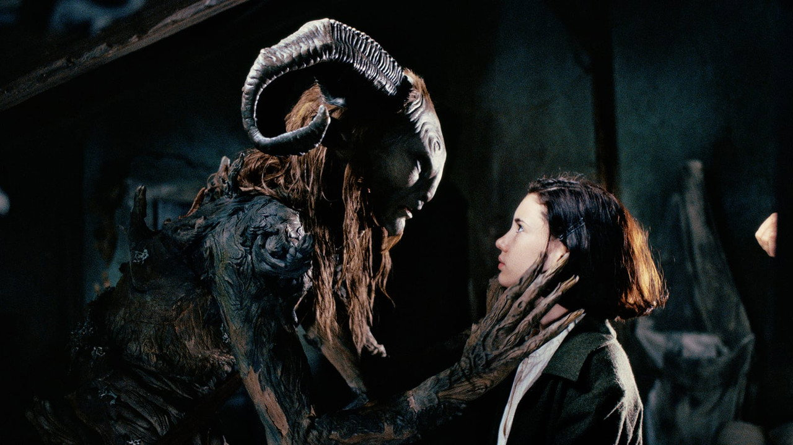
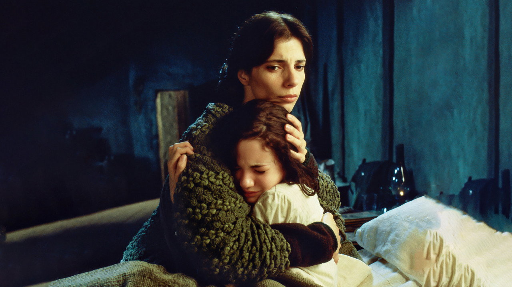
导演与主创 · 他们的历史作品

 环太平洋
环太平洋 水形物语
水形物语 地狱男爵
地狱男爵 地狱男爵2：黄金军团
地狱男爵2：黄金军团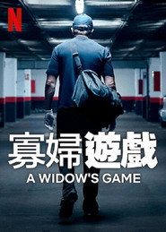
寡妇游戏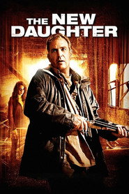
新女儿短评（轻微剧透）
《潘神的迷宫》最迷人的是它从不告诉你「童话是假的」。奥菲丽亚做的三个任务，每一件在现实里都能找到对应的残酷——潘神要她不碰食物，继父让母亲挨饿；妖怪锁着的孩子，对应游击队的孤儿。德尔·托罗把法西斯和神话并置，让你分不清哪一个更残忍。影片真正的高级感来自这种「双线同构」：你以为在看一个女孩的逃避，其实在看一个国家怎么用秩序之名行暴力之实。缺点得说：它节奏不快，奇幻段落与现实段落交替会考验耐心；豆瓣 7.9 偏低，说明中文观众对「暗黑童话 + 战争」的混搭接受度有限；结尾的处理有人认为过于悲悯、削弱了现实的残酷。轻微剧透：奥菲丽亚最后选择不喝血、宁可被枪指——她用「不服从」完成了第三个任务，而影片在那一瞬间让两个世界合拢，把她送回了她一直想回的地方。
为什么值得一看
喜欢《水形物语》《鬼童院》类暗黑奇幻的观众；能接受慢节奏、隐喻密度高、且含战争暴力与身体恐怖的成年观众（15 禁）。不适合想看轻松奇幻的人。内地未引进，流媒体可看。
红辣椒 Paprika
一台能进别人梦里的机器被盗了。梦境开始入侵现实。
剧情梗概
近未来，精神医学研究所开发出「PT 机器」，能通过仪器让医生进入患者梦境做治疗。女医师千叶敦子用它化身「红辣椒」潜入梦境，是所里最受欢迎的治疗师。可一台原型机被盗，盗贼开始在政商名流的梦里植入混乱，梦境与现实开始交融、塌缩。她和同事、一位天才科学家、一个身份成谜的男孩，必须在所有人醒来之前找回机器、堵住裂缝。
亮点
- 今敏自编自导，改编自筒井康隆 1993 年的同名科幻小说；这是他继《未麻的部屋》《千年女优》《东京教父》后的第四部长片，也是生前最后一部完成作。
- 梦境的「多层坍缩」与「现实侵入梦、梦也侵入现实」的视觉语法，被公认为直接启发了《盗梦空间》（诺兰本人多次提及今敏的影响）。
- 林原惠美为「红辣椒 / 千叶敦子」配音（一人分饰冷静医师与活泼分身），古谷彻等实力声优加盟。
- 影片把广告、卡通、游行、变形、杂烩祭典全揉进梦境，色彩与运动密度极高，是手绘动画时代「想象力无边界」的巅峰样本。
- 入围第 59 届戛纳电影节主竞赛单元；Metacritic 81、烂番茄 85%，在动画与科幻双圈都享有极高声誉。
- 今敏 2010 年因胰腺癌逝世，年仅 46 岁，《红辣椒》成为他留给世界的最后一部长片想象。
导演与主创 · 他们的历史作品
短评（轻微剧透）
《红辣椒》是一部「看完会怀疑自己刚才是醒着还是在做梦」的电影。今敏最厉害的是他从不给你一个稳定的世界：上一秒是严肃的医学会议，下一秒整条街变成游行花车，再下一秒你分不清谁在谁梦里。这种「边界溶解」不是炫技，它正好对应片子的核心命题——人怎么区分真实欲望和外界灌输的幻觉。它对《盗梦空间》的影响几乎是公开的秘密，但今敏更野、更不加掩饰，梦境里那些身体变形与群体狂欢，是诺兰不敢碰的部分。缺点也要说：信息量极大、符号密集，第一次看容易晕；逻辑经不起逐帧推敲（它本来也不是逻辑片）；豆瓣 8.9 很高，但部分观众会觉得「形式大于故事」。轻微剧透：当红辣椒在现实的街道上奔跑、身后梦境像潮水追来时，影片把「一个人的梦变成全城人的梦」拍成了一种温柔的失控——它要的从来不是解谜，是让你承认自己也馋那口梦。
为什么值得一看
喜欢《盗梦空间》《未麻的部屋》《攻壳机动队》那种「现实与意识边界」题材的观众；动画爱好者与脑洞型科幻迷。含少量性暗示与强烈视觉眩晕（PG-12，建议未成年在家长陪同下）。内地未引进，流媒体可看。
变蝇人 The Fly
科学家发明了一台能传送物质的机器。第一次带自己上机，混进了一只苍蝇。
剧情梗概
离群索居的科学家赛斯造出两台「电传舱」，能把物体从一个舱瞬移到另一个。他认识了记者薇拉，两人渐生情愫。一次醉酒后的实验，赛斯自己走进舱里，却不知道一只苍蝇同时混了进去——机器把两者的基因「融合」了。起初他觉得自己变强、精力过剩；很快，他发现自己正在不可逆地变成别的什么东西，而人性正一点点从身体里退场。
亮点
- 大卫·柯南伯格自编自导，翻拍自 1958 年同名 B 级片；这是他「身体恐怖」美学的代表作，把科幻设定彻底服务于「肉身失控」的焦虑。
- 杰夫·高布伦饰赛斯，他那种由内而外的「缓慢异化」的表演，被誉为身体恐怖表演的教科书；吉娜·戴维斯饰记者薇拉，是片中唯一稳定的人类情感锚点。
- 特效团队打造的那场「手变形成蹼、皮肤脱落」的渐变过程，拿下了第 59 届奥斯卡最佳化妆奖。
- 柯南伯格借「渐渐不是人」拍的是疾病、衰败与失控——后人普遍把它读成一部关于艾滋与慢性消亡的寓言（影片上映于 80 年代中期的疫情阴影下）。
- 烂番茄 92%、Metacritic 79，是柯南伯格评价最高的作品之一；它比原版更悲、也更有人味。
- 获第 59 届奥斯卡最佳化妆，并提名最佳改编剧本。
导演与主创 · 他们的历史作品
 感官游戏
感官游戏 侏罗纪公园2：失落的世界
侏罗纪公园2：失落的世界 侏罗纪公园
侏罗纪公园 雷神3：诸神黄昏
雷神3：诸神黄昏 独立日
独立日短评（轻微剧透）
《变蝇人》最残忍的地方是它让你「看着一个人慢慢消失」。柯南伯格没把变异拍成突然的怪物袭击，而是拍成一种退行：今天指甲掉了，明天记不清人脸，后天连「我是谁」都开始模糊。杰夫·高布伦的表演是灵魂，他把「变强」和「变坏」演成同一件事的两种说法，让你在替他高兴和替他害怕之间反复横跳。影片真正动人的反而是爱情线——薇拉爱的是那个人，而那个人正在被一台机器抹掉，她要不要继续靠近一个正在变成非人的东西？这种「爱一个正在消失的人」的命题，比恐怖更揪心。缺点要说清楚：前半段节奏偏慢，科学设定很糙（基因融合纯属脑洞）；豆瓣 7.5 在柯南伯格作品里算中游，部分观众嫌它老派。轻微剧透：赛斯最后用仅存的人性做出那个决定——他把枪递给薇拉，不是求救，是请求被从「正在变成的怪物」里释放出来，这一幕把全片的悲从恐怖里拎了出来。
为什么值得一看
喜欢《感官游戏》《录影带谋杀案》《机械姬》那种「科技侵入身体」题材的观众；能接受高强度的身体恐怖与变形描写的成年观众（R 级，慎入）。不适合怕虫、怕血肉变形的观众。内地未引进，流媒体可看。
妙想天开 Brazil
一个被官僚机器管到窒息的未来社会。一个小职员只是想修好空调。
剧情梗概
在一个庞大、灰暗、纸张与管道塞满一切的未来专制社会里，小公务员萨姆每天的工作是签字、归档、纠错。一次系统把「巴特尔」误打成「布托」，导致一个无辜平民被抓，萨姆想私下补救，却因此被卷进一场对抗整个体制的麻烦。他反复梦见自己长出翅膀、救下一个陌生女人；现实里，那个女人似乎真的存在。越想挣脱，管道和表格就越把他缠紧。
亮点
- 特里·吉列姆（《巨蟒与圣杯》《十二猴子》导演）自编自导，是与《1984》同气的反乌托邦寓言，片名源自那首同名轻松老歌，形成残酷反差。
- 乔纳森·普雷斯饰萨姆，罗伯特·德尼罗饰一个专撬管道、帮人「消失」的地下修理工，是全片最灵动的反体制符号。
- 视觉设计自成体系：到处是粗笨的管道、过时的打字机、永远在修的中央空调——一种「复古未来主义」的荒诞美学。
- 它 famously 与制片方爆发「剪辑权之战」：片方嫌 142 分钟太长，吉列姆宁可自费登广告抗议也要保住导演剪辑版；今天通行的是导演剪辑版。
- 烂番茄 98%、Metacritic 88，长期被影评人列为影史最佳科幻 / 反乌托邦片之一；入围戛纳主竞赛。
- 对后世影响深远，从《银翼杀手》的都市官僚感到《纽约提喻》的体制窒息，都能看到它的影子。
导演与主创 · 他们的历史作品
 恐惧拉斯维加斯
恐惧拉斯维加斯 加勒比海盗1：黑珍珠号的诅咒
加勒比海盗1：黑珍珠号的诅咒 教宗的承继
教宗的承继 加勒比海盗3：世界的尽头
加勒比海盗3：世界的尽头 小丑
小丑短评（轻微剧透）
《妙想天开》的恐怖是「温柔的窒息」。吉列姆没有拍枪炮与集中营，他拍的是一个连空调都修不好的世界——你办的每一件事都要填表、等批、被转接，最后连「我想修好它」这个念头都成了罪。萨姆的梦境是片子里唯一有颜色的地方，可那也救不了他，因为梦里的翅膀在现实里只是又一层要归档的纸。德尼罗演的那个钻管道的男人，是全片最浪漫的反抗：他不革命，他只是帮你「从系统里消失」。缺点要讲：142 分钟对不习惯慢节奏和政治隐喻的人很长；黑色幽默的密度高，笑点偏冷；它不像传统科幻有视觉奇观。轻微剧透：结尾那场「全片最暖」的戏其实是萨姆被刑讯到精神崩解后的幻想——吉列姆把希望的假象放在最后，让你在字幕亮起时才意识到他从来没出去过。
为什么值得一看
喜欢《1984》《银翼杀手》《十二猴子》那种反乌托邦与官僚荒诞的观众；喜欢冷幽默、隐喻和作者表达的成年观众。节奏慢、对白密、无动作场面，不适合想看科幻特效的人。内地未引进，流媒体可看。
第五元素 The Fifth Element
2300 年，地球要被一团黑烟毁灭。能救世界的「第五元素」是个橙发女孩。
剧情梗概
2259 年，一个被称为「伟大黑暗」的混沌实体正朝地球逼近，传说只有集齐「四元素」加神秘的「第五元素」才能挡住它。退役特种兵科本被临时拉回，却被卷进一场星际争夺：一个由人类基因重建出的女战士莉露（身负第五元素）从实验室逃出，落在他手里。他们要赶在末日前，从外星歌星、牧师和一座漂浮城市里，拼齐那套能激活「神圣武器」的钥匙。
亮点
- 吕克·贝松（《这个杀手不太冷》《超体》导演）自编自导，概念雏形来自他 16 岁画的漫画；这是法国科幻在本土之外最卖座的作品之一。
- 布鲁斯·威利斯饰退役兵科本，米拉·乔沃维奇饰莉露——她经典的橙色短发、绷带造型与「外星语」由吕克·贝松亲自设计，成为 90 年代流行符号。
- 美术与服装由法国漫画大师让-克洛德·梅齐耶（《蓝甲虫》漫画作者）与名设计师德塔·冯·蒂尔萨操刀，未来都市、飞行出租车、歌剧院的视觉是漫画式饱和色块的狂欢。
- 加里·奥德曼饰大反派佐格（一个歇斯底里的军火贩），把「反派当喜剧演」推到极致；克里斯·塔克饰话痨外星主持人，是当时的噱头也是争议点。
- 配乐由埃尼奥·莫里康内创作，把歌剧、电子与管弦乐混在一起，与画面那股疯劲严丝合缝。
- 成本约 9000 万美元，全球票房约 2.6 亿美元；近年被重新评价为「邪典科幻经典」。
导演与主创 · 他们的历史作品
 超体
超体 第六感
第六感短评（轻微剧透）
《第五元素》是一部「不讲道理但讲得很开心」的科幻片。吕克·贝松把巴黎漫画的饱和色、意大利歌剧、90 年代电子乐和一场场胡闹动作戏全塞进 2259 年，逻辑经不起推敲，但那种「反正世界要完、我们先嗨一场」的能量极其罕见。米拉·乔沃维奇的莉露是全片灵魂——她不是传统女主，是一个刚被造出来、什么都不懂却比谁都勇的「武器」，她和威利斯之间那种别扭的信任戏意外好笑又动人。缺点必须说：克里斯·塔克那个角色很多人嫌吵；加里·奥德曼的表演有些过火；剧情推进靠巧合堆砌，豆瓣 8.1 但烂番茄只有 71%，专业影评当年普遍嫌它浮。轻微剧透：结尾莉露差点「死」的那段，科本一句「我爱你」成了激活武器的密钥——它把整部片的主题从「打怪」收束成「爱是第五元素」， cheesy 但诚实地圆了题。
为什么值得一看
喜欢《银翼杀手》《星球大战》《这个杀手不太冷》那种风格化、浪漫、不求严密的科幻冒险观众；能接受吵闹、绚烂、略无厘头的成年观众（12 禁）。不适合追求硬核科幻逻辑的人。内地未引进，流媒体可看。
告白 Confessions
女教师最后一堂课宣布：我女儿是被你们两个学生杀的。然后她开始复仇。
剧情梗概
中学女教师森口在最后一堂课上平静地告诉全班：她的四岁女儿死在学校的泳池，而凶手就是班里的两个学生——一个成绩好却冷漠的少年，和一个总被排挤的少年。法律管不了未成年人，她不报警，而是用自己的方式「宣判」：她把携带艾滋病毒的血液混进了其中一个孩子的牛奶里。之后镜头切到几个学生的独白，层层揭开每个人的扭曲、恐惧与互相吞噬，复仇像病毒一样在教室里扩散。
亮点
- 中岛哲也自编自导，改编自凑佳苗同名畅销推理小说；这是他从广告 / 音乐录像导演转型后的代表作，把「美到极致的画面」和「极暗的故事」焊在一起。
- 松隆子饰森口悠子，几乎全片靠眼神和语气撑场，从温柔到冷酷只在一念之间；冈田将生、西井幸人等分饰问题学生。
- 叙事结构是「多视角独白」：同一事件被不同角色转述，真相在重叠与矛盾里慢慢显形，是推理与心理惊悚的混合。
- 视觉上极尽绚烂——慢镜、逆光、花瓣与血并置、流行歌曲反复变奏——用青春片的糖衣包一颗毒药。
- 拿下第 34 届日本电影学院奖最佳影片、最佳导演、最佳剧本等多项大奖；代表日本申报奥斯卡最佳外语片。
- 豆瓣 8.1、烂番茄 81%，是 2010 年代日本社会派惊悚最具国际声量的作品之一。
导演与主创 · 他们的历史作品
 渴望
渴望短评（轻微剧透）
《告白》最让人后背发凉的是它的「漂亮」。中岛哲也故意把最残忍的事拍得最美——逆光里的泳池、飘落的花瓣、突然静音的瞬间，越美你越知道底下是什么。森口那番「最后一课」的独白是全片引擎：她不喊不叫，只是把事实铺平，然后静静看着法律够不到的孩子被自己的设计推向深渊。影片真正拍的是「未成年人的恶」与「成年人的无力如何转化成更冷的恶」——复仇不是爽片，是一圈一圈的传染。多视角结构很聪明，每个孩子的独白都先让你同情、再让你恶寒。缺点要说：它对部分观众来说「用力过猛」，情绪密度高到有些喘；结尾处理偏戏剧化；豆瓣 8.1 但有人嫌它的美学与主题的割裂是刻意为之的炫技。轻微剧透：当最后一个独白揭开「谁才是真正失控的人」时，你会发现森口的复仇早就不只是为女儿——它变成了一场关于「到底谁该为这间教室负责」的集体审判。
为什么值得一看
喜欢《被嫌弃的松子的一生》《热血高校》那种暗黑青春 / 社会派惊悚的观众；能接受高情绪密度、未成年人犯罪题材与强烈视觉风格的成年观众（15 禁）。不适合想看轻松片的人。内地未引进，流媒体可看。